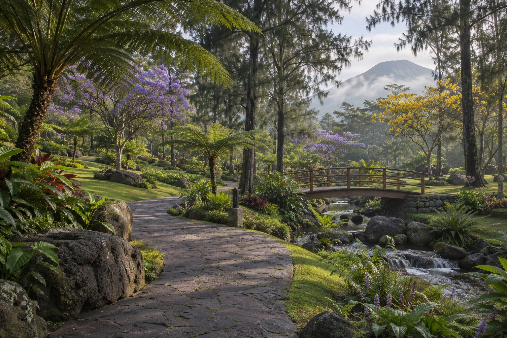

Mount Paradise / Trawas, East Java
An elevated way to
stay, gather, and live.
A mountain destination taking shape. Exceptional hospitality, private homes and extraordinary occasions.
The vision
More than a place.
A way of life.
Imagine a mountain destination where a garden walk leads to a beautiful table, a private home belongs to a wider community, and the most important moments have room to unfold. This is the vision for Mount Paradise.

The Main Lodge
A generous heart.
A warm welcome.
Layered timber roofs, rich volcanic stone, dining terraces and garden rooms. The planned Main Lodge brings hospitality and social life together.
Explore the Main Lodge
The mountain lifestyle
Good food.
Time to enjoy it.
Breakfast beneath the timber eaves. A fresh lunch after a swim. An afternoon that leaves room for a walk, a book and another coffee. The pleasure of Mount Paradise is in the rhythm of the whole day.
Discover life around the lodge
Wellness & recreation
Energy for the day.
Space to restore.
Mountain Baths, indoor swimming, tennis, padel, racquetball and fitness. An ambitious plan for an active, restorative mountain life.
Explore wellness & recreation
Arboretum & botanical gardens
A landscape
worth getting lost in.
A proposed living collection of remarkable trees, fern walks, water gardens and seasonal color.
Walk into the garden vision
The 800 Club
A world of
good company.
A private members’ club envisioned around books, leather armchairs, rare whiskeys and intimate evenings.
Enter the 800 Club
Private residences
A place
of your own.
A sheltered veranda, a private pool and a garden of your own. The Garden Lodge captures the everyday appeal of mountain living, within a wider collection of cabins, lodges and estates.
Explore the residence collectionExtraordinary occasions
For the moments
that bring us together.


Arvorest Woods
The country
side of paradise.
A partially developed enclave of luxury glamping, pondside life, chickens and birds. A gentler chapter within the wider destination.
Discover Arvorest WoodsThe next chapter
A vision
with room to grow.
Explore the destination as it takes shape, or speak with us about making a home within it.